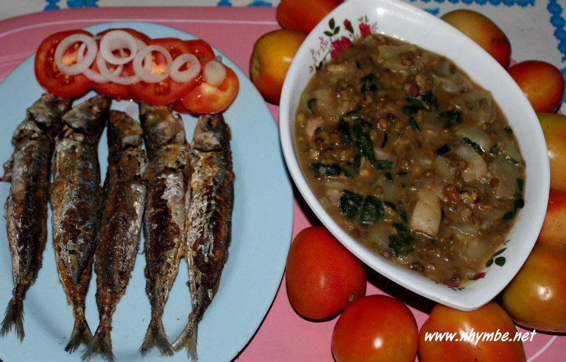

Back
Pork Monggo With Crispy
Galunggong

Ingredients
Instructions
JUMP TO VIDEO
Nutrition Information Calories: 957kcal (48%) Carbohydrates: 46g (15%)
Protein: 51g (102%) Fat: 64g (98%) Saturated Fat: 7g (35%) Polyunsaturated Fat: 17g
Monounsaturated Fat: 38g Trans Fat: 0.2g Cholesterol: 122mg (41%) Sodium: 4546mg (189%) Potassium: 2030mg (58%)
Fiber: 13g (52%) Sugar: 7g (8%) Vitamin A: 6950IU (139%) Vitamin C: 33mg (40%)
Calcium: 203mg (20%) Iron: 7mg (39%)